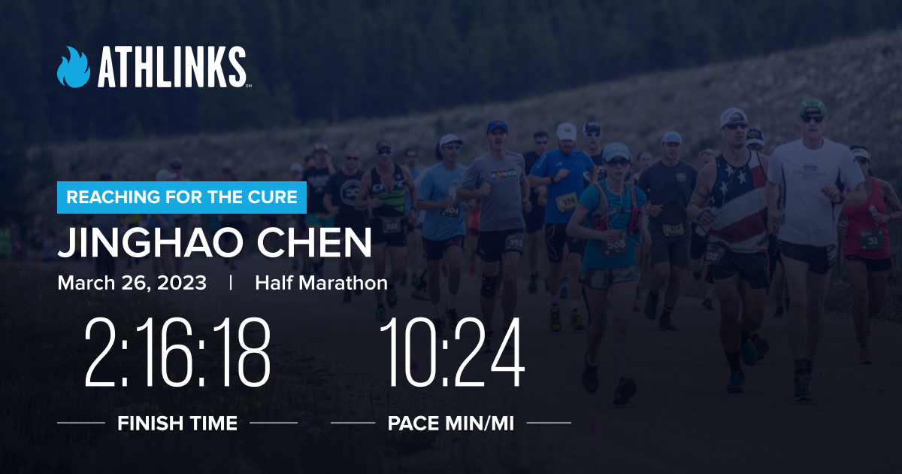

Special thanks to my mentor, my friend, Dr. Santiago Guisasola. He is the first and the only donor who supported my running for local cancer research through my fundraising page. I really appreciate your helps and everything you did for me. Thank you!post
[NEWS] My First Half Marathon (in person)
NEWS Originally published 2023-03-26